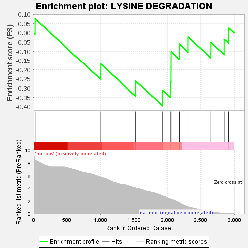
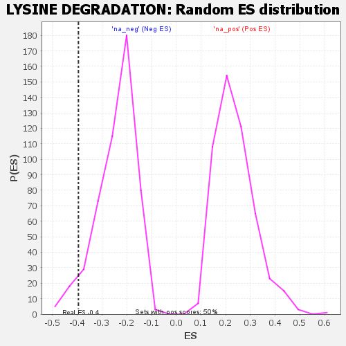

| | | Dataset | GSEA RNK clr Maaslin2 MucosalvsLuminal KO - Ileum.rnk |
| Phenotype | NoPhenotypeAvailable |
| Upregulated in class | na_neg |
| GeneSet | LYSINE DEGRADATION |
| Enrichment Score (ES) | -0.39501002 |
| Normalized Enrichment Score (NES) | -1.6291258 |
| Nominal p-value | 0.045725647 |
| FDR q-value | 0.13293214 |
| FWER p-Value | 0.877 |
Table: GSEA Results Summary

Fig 1: Enrichment plot: LYSINE DEGRADATION
Profile of the Running ES Score & Positions of GeneSet Members on the Rank Ordered List

Fig 2: LYSINE DEGRADATION: Random ES distribution
Gene set null distribution of ES for LYSINE DEGRADATION